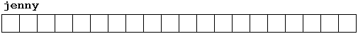
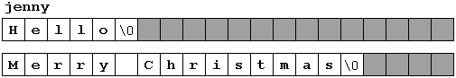

|
Section 3.2 Strings of Characters. |
 |
|
| |
|
Section 3.2 Strings of Characters. |
|
|
| |
In all programs seen until now, we have used only numerical variables, used to express numbers exclusively. But in addition to numerical variables there also exist strings of characters, that allow us to represent successions of characters, like words, sentences, names, texts, et cetera. Until now we have only used them as constants, but we have never considered variables able to contain them.
In C++ there is no specific elemental variable type to store strings of characters. In order to fulfill this feature we can use arrays of type char, which are successions of char elements. Remember that this data type (char) is the one used to store a single character, for that reason arrays of them are generally used to make strings of single characters.
For example, the following array (or string of characters):
char jenny [20];can store a string up to 20 characters long. You may imagine it thus:
This maximum size of 20 characters is not required to be always fully used. For example, jenny could store at some moment in a program either the string of characters "Hello" or the string "Merry christmas". Therefore, since the array of characters can store shorter strings than its total length, there has been reached a convention to end the valid content of a string with a null character, whose constant can be written 0 or '\0'.
We could represent jenny (an array of 20 elements of type char) storing the strings of characters "Hello" and "Merry Christmas" in the following way:
Notice how after the valid content it is included a null character ('\0') in order to indicate the end of string. The panels in gray color represent indeterminate values.
Because strings of characters are ordinary arrays they fulfill all teir same rules. For example, if we want to initialize a string of characters with predetermined values we can do it in a similar way to any other array:
char mystring[] = { 'H', 'e', 'l', 'l', 'o', '\0' };In this case we would have declared a string of characters (array) of 6 elements of type char initialized with the characters that compose Hello plus a null character '\0'.
Nevertheless, string of characters have an additional way to initialize its values: using constant strings.
In the expressions we have used in examples of previous chapters there have already
appeared several times constants that represented entire strings of characters.
These are specified enclosed between double quotes ("), for example:
"the result is: "is a constant string that we have propably used in some occasion.
Unlike single quotes (') which allow to specify single character constants, double quotes (") are constants that specify a succession of characters. These strings enclosed between double quotes have always a null character ('\0') automatically appended at the end.
Therefore we could initialize the string mystring with values by any of these two ways:
char mystring [] = { 'H', 'e', 'l', 'l', 'o', '\0' };In both cases the Array or string of characters mystring is declared with a size of 6 characters (elements of type char): the 5 characters that compose Hello plus a final null character ('\0') which specifies the end of the string and that, in the second case, when using double quotes (") it is automatically appended.
char mystring [] = "Hello";
Before going further, I notice to you that the assignation of multiple constants like
double-quoted constants (") to arrays are only valid when
initializing the array, that is, at the moment when declared.
Expressions within the code like:
mystring = "Hello";are not valid for arrays, like neither would be:
mystring[] = "Hello";
mystring = { 'H', 'e', 'l', 'l', 'o', '\0' };So remember: We can "assign" a multiple constant to an Array only at the moment of initializing it. The reason will be more comprehensible when you know a bit more about pointers, since then it will be clarified that an array is simply a constant pointer pointing to an allocated block of memory. And because of this constantnes, the array itself can not be assigned any value, but we can assing values to each of the elements of the array.
At the moment of initializing an Array it is a special case, since it is not an assignation, although the same equal sign (=) is used. Anyway, have always present the rule previously underlined.
mystring[0] = 'H';But as you may think, this does not seem to be a very practical method. Generally for assigning values to an array, and more specifically to a string of characters, a series of functions like strcpy are used. strcpy (string copy) is defined in the cstring (string.h) library and can be called the following way:
mystring[1] = 'e';
mystring[2] = 'l';
mystring[3] = 'l';
mystring[4] = 'o';
mystring[5] = '\0';
strcpy (string1, string2);This does copy the content of string2 into string1. string2 can be either an array, a pointer, or a constant string, so the following line would be a valid way to assign the constant string "Hello" to mystring:
strcpy (mystring, "Hello");For example:
// setting value to string
#include <iostream.h>
#include <string.h>
int main ()
{
char szMyName [20];
strcpy (szMyName,"J. Soulie");
cout << szMyName;
return 0;
}
| J. Soulie |
Look how we have needed to include <string.h> header in order to be able to use function strcpy.
Although we can always write a simple function like the following setstring with the same operating than cstring's strcpy:
// setting value to string
#include <iostream.h>
void setstring (char szOut [], char szIn [])
{
int n=0;
do {
szOut[n] = szIn[n];
} while (szIn[n++] != '\0');
}
int main ()
{
char szMyName [20];
setstring (szMyName,"J. Soulie");
cout << szMyName;
return 0;
}
| J. Soulie |
Another frequently used method to assign values to an array is by using directly the input stream (cin). In this case the value of the string is assigned by the user during program execution.
When cin is used with strings of characters it is usually used with its getline method, that can be called following this prototype:
cin.getline ( char buffer[], int length, char delimiter = ' \n');where buffer is the address where to store the input (like an array, for example), length is the maximum length of the buffer (the size of the array) and delimiter is the character used to determine the end of the user input, which by default - if we do not include that parameter - will be the newline character ('\n').
The following example repeats whatever you type on your keyboard. It is quite simple but serves as example on how you can use cin.getline with strings:
// cin with strings
#include <iostream.h>
int main ()
{
char mybuffer [100];
cout << "What's your name? ";
cin.getline (mybuffer,100);
cout << "Hello " << mybuffer << ".\n";
cout << "Which is your favourite team? ";
cin.getline (mybuffer,100);
cout << "I like " << mybuffer << " too.\n";
return 0;
}
|
What's your name? Juan Hello Juan. Which is your favourite team? Inter Milan I like Inter Milan too. |
Notice how in both calls to cin.getline we used the same string identifier (mybuffer). What the program does in the second call is simply step on the previous content of buffer by the new one that is introduced.
If you remember the section about communication through console, you will remember that we used the extraction operator (>>) to receive data directly from the standard input. This method can also be used instead of cin.getline with strings of characters. For example, in our program, when we requested an input from the user we could have written:
cin >> mybuffer;this would work, but this method has the following limitations that cin.getline has not:
// cin and ato* functions
#include <iostream.h>
#include <stdlib.h>
int main ()
{
char mybuffer [100];
float price;
int quantity;
cout << "Enter price: ";
cin.getline (mybuffer,100);
price = atof (mybuffer);
cout << "Enter quantity: ";
cin.getline (mybuffer,100);
quantity = atoi (mybuffer);
cout << "Total price: " << price*quantity;
return 0;
}
|
Enter price: 2.75 Enter quantity: 21 Total price: 57.75 |
NOTE: char* is the same as char[]
Check the C++ Reference for extended information about these and other functions of this library.
| © The C++ Resources Network, 2000-2001 - All rights reserved |
 Previous:
Previous:3-1. Arrays |
 index |
 Next:
Next:3-3. Pointers |